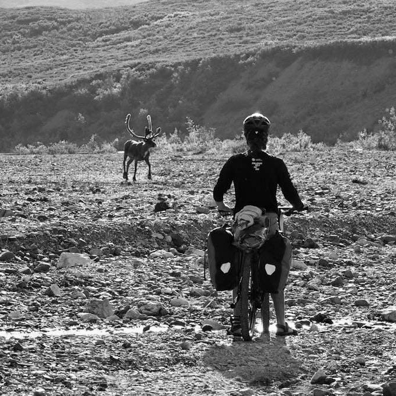
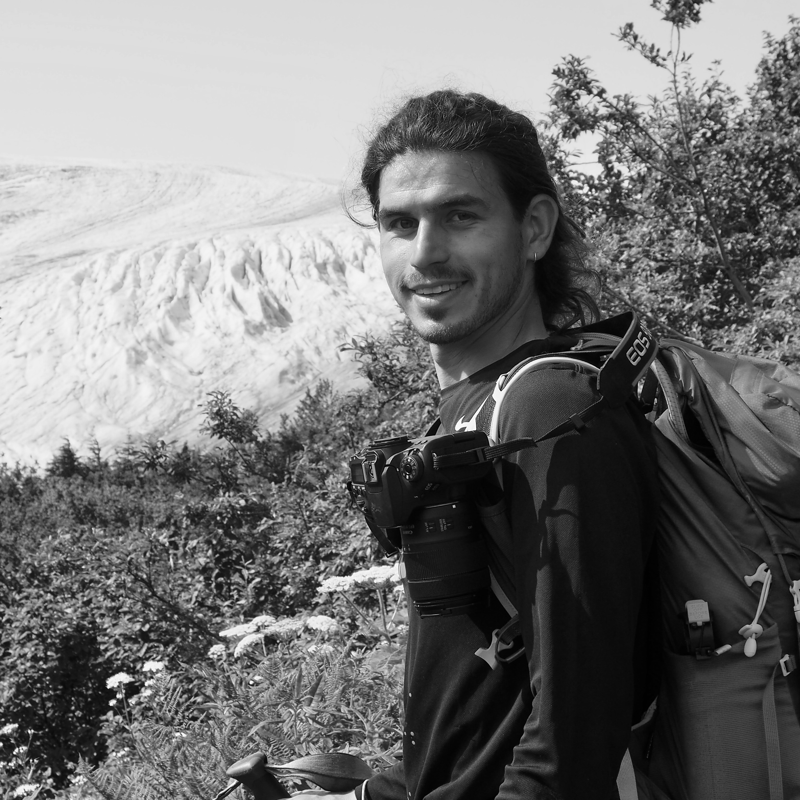

ÉQUIPE
Deux regards, un territoire
ITINÉRAIRE & FAUNE
Clara Aimar
Docteure en mécanique dans le milieu sportif, Clara aime le challenge sportif et l'aventure (Alaska, Yukon, Guatemala), et s'occupe de l'itinéraire ainsi que de la préparation physique et matérielle de la traversée. Son regard se portera en priorité sur la faune et la flore du Pantanal.


POPULATIONS & PAYSAGE
Adrien Toledano
Réalisateur et photographe franco-espagnol, auteur d'un documentaire primé sur les enjeux environnementaux de l'extraction minière au Brésil. Son niveau en portugais lui permettra de photographier en priorité les populations locales et les pressions de l'agro-industrie sur le territoire.

